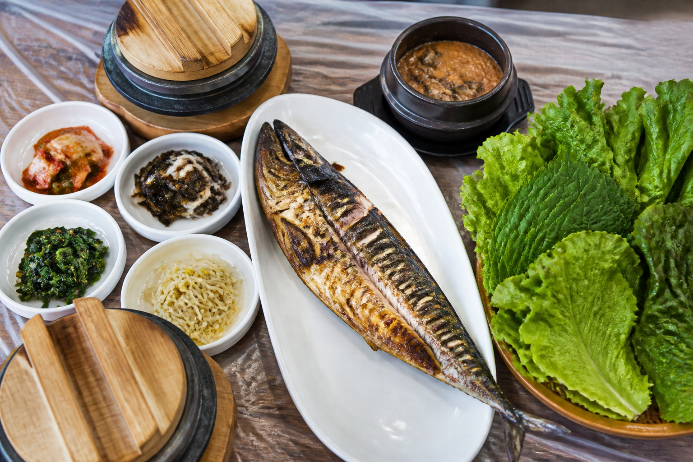
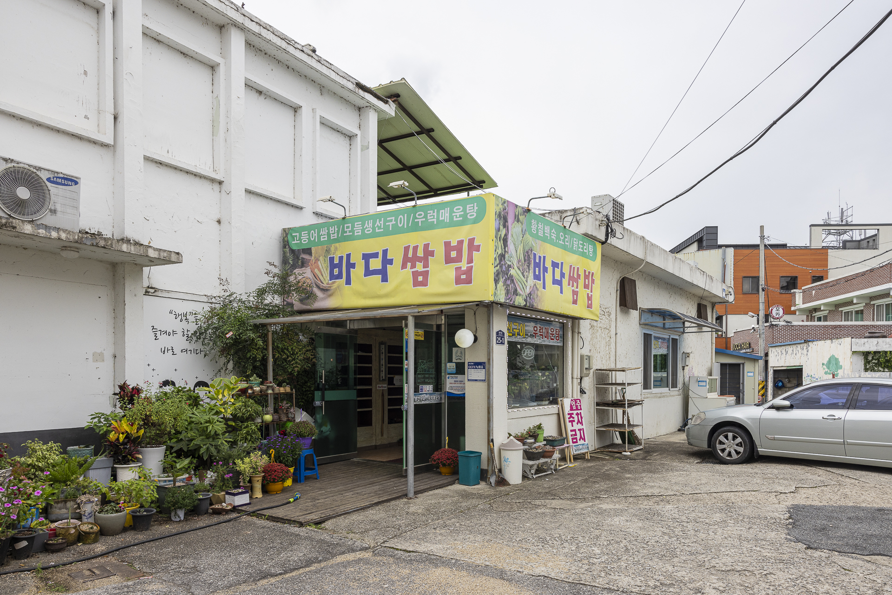
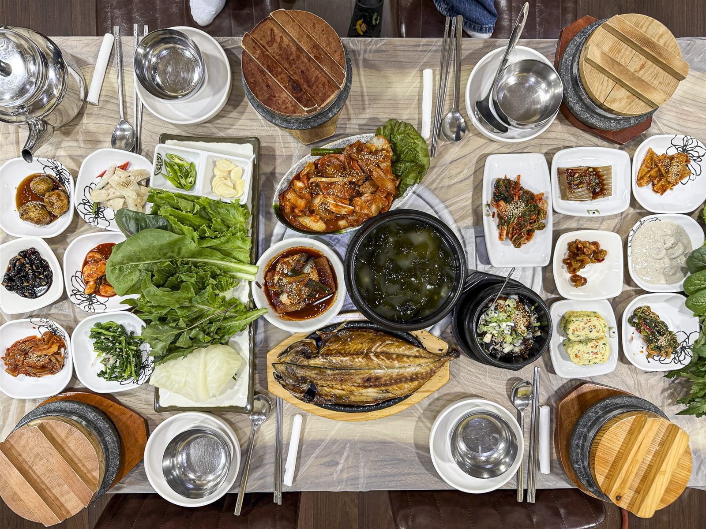
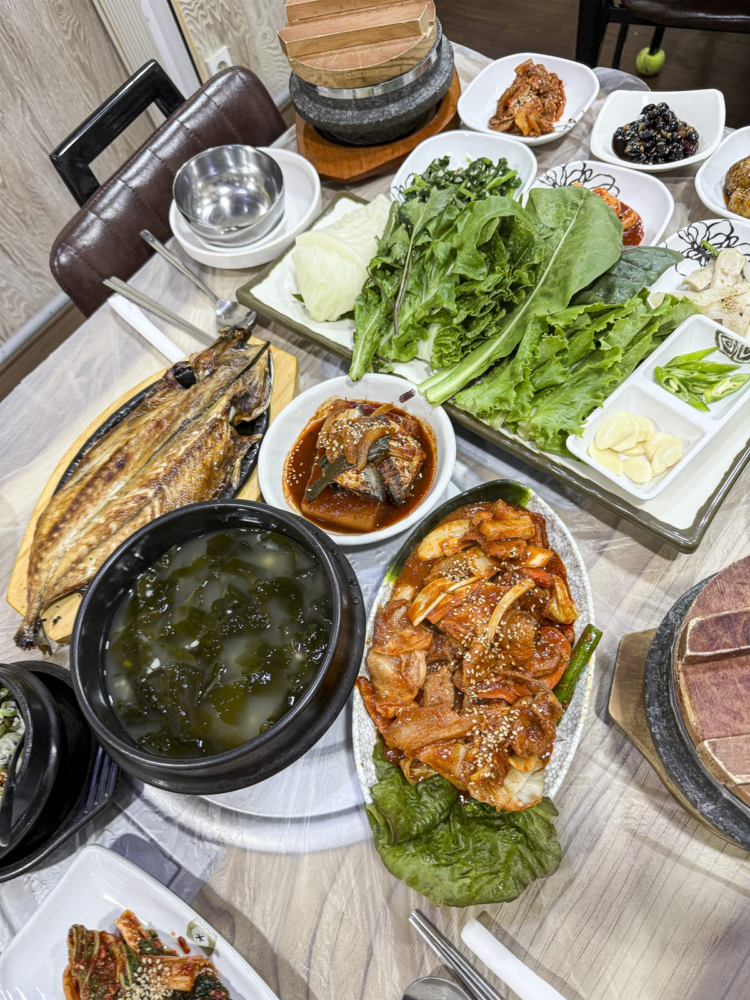

Our Story
정읍이 자랑하는
쌈밥 맛집
바다쌈밥은 오래전부터 정읍 쌈밥 맛집으로 이름난 곳입니다. 정읍 동네 손님은 물론 외지에서도 일부러 찾아와, 고등어·제육 우렁쌈밥과 생선구이, 우럭매운탕을 함께 즐깁니다. 돌솥밥과 십수 가지 반찬, 아삭한 쌈채소가 한자리에 모이는 푸짐한 한 상입니다.
- 정읍 현지인과 외지인이 함께 찾는 맛집
- 쌈채소·반찬이 푸짐한 정식
- 매장 앞 손님 전용 주차


